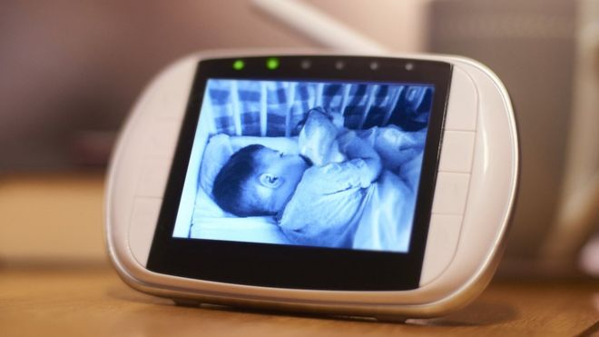

Biruk Tesfaye Ayalew
Microsot takes down global zombie bot network

Microsoft has said it was part of a team that dismantled an international network of zombie bots. The network called Necrus infected over nine computers and is one of the world's largest botnet. Necrus was responsible for multilpe criminal scams including stealing personal information ans sending fake pharmaceutical emails. Tom Burt, Microsofts vice president for customer and trust said in a blog post that the takedown of necurs was the result of eight year of planning and co-ordination with partners in 35 countries.
China demands US response over CIA hacking claims
The china foreign minstry has asked the US for a "clear explanaiton" after the CIA claim of hacking targets in china for atleat 11 years. The allegations ware made by Qihoo, a well -known cyber-secuity firm based in Beijing. The company said it has found evidence in malware suggesting the CIA had targeted airlines, petrol companies and government agencies. Among other alleged targets of the hacking campaign were internet firms, scientific institutions and energy companies.
Smart camera and baby monitor warning given by UK's cyber-defender
Smart cameras and baby monitors can be watched by criminals over the internet, securitty chief warns. The national Cyber security center(NCSC) is advising people to tweak the settings after buying them. Easy-to-guess default passwords might let a hacker secretly observe a home through connected devices.There are many examples of devices being accessed without permission. One is security reearchers easily breached an adult toy that had a camera attached, in 2017. The other is a couple from Leeds haas been watched thousands of times online without their knowledge.
Connect with me


Follow Adobe Photoshop on twitter